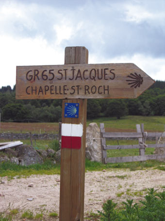

Chemins de
Saint-Jacques-
de-Compostelle


⟹ Chemins de Pèlerinage & Mémoire ⟸
Depuis le XIe siècle, des foules de pèlerins traversent le Quercy en direction du tombeau de l'apôtre Jacques, à Saint-Jacques-de-Compostelle, en Galice. La Via Podiensis, l'un des quatre grands chemins historiques français, s'élance du Puy-en-Velay et traverse l'Aubrac, le Rouergue puis le Quercy avant de rejoindre les Pyrénées.

Le passage par le Quercy s'explique aussi par la présence de deux sanctuaires majeurs sur ou à proximité du tracé : Rocamadour, dont le culte marial attire dès le XIIe siècle une foule de pèlerins prêts à faire un détour, et Cahors, ville-étape dotée de son hôpital Saint-Jacques et de son pont fortifié, le pont Valentré.
Le long du chemin se sont développés, dès le Moyen Âge, tout un réseau d'hospices, de confréries et de maladreries destinés à accueillir, soigner et parfois enterrer les marcheurs, dont beaucoup entreprenaient ce voyage de plusieurs mois au péril de leur vie.
En 1998, l'UNESCO inscrit les chemins de Compostelle en France au patrimoine mondial, reconnaissant la valeur exceptionnelle de ce réseau de routes, d'édifices religieux et d'ouvrages d'art qui a façonné les échanges culturels européens pendant près de mille ans.
« Le chemin se fait en marchant. »
— Adage traditionnel des pèlerins de CompostelleChaque année, des dizaines de milliers de marcheurs empruntent la Via Podiensis à travers le Lot, pour des motivations aussi variées que la foi, la reconstruction personnelle, le goût du patrimoine ou simplement la marche au long cours.
Ce flux continu de pèlerins et de randonneurs fait vivre tout un écosystème local : gîtes d'étape, hospitalités associatives, commerces de village et offices de tourisme organisent leur activité autour du passage du chemin.
Des associations de bénévoles, souvent héritières des anciennes confréries de pèlerins, continuent d'entretenir le balisage et d'accueillir les marcheurs dans un esprit de partage resté proche de celui du Moyen Âge.
Fréquentation croissante : l'affluence estivale exerce une pression grandissante sur certains sentiers et sur la capacité d'accueil des hébergements historiques.
Entretien du balisage : le marquage GR nécessite un entretien constant, largement assuré par des bénévoles associatifs.
Patrimoine bâti : hospices, chapelles et ponts anciens demandent des travaux de restauration coûteux pour rester praticables et visitables en sécurité.
Transmission du sens : maintenir la dimension spirituelle et culturelle du chemin face à sa fréquentation touristique croissante reste un enjeu pour les acteurs locaux.
Le Lot concentre certains des passages les plus marquants de la Via Podiensis, entre patrimoine roman, villages perchés et sanctuaire marial.
Cahors et son pont Valentré ville-étape historique franchissant le Lot par l'un des ponts fortifiés les mieux conservés de France.
Figeac ancienne étape monastique, connue pour son abbatiale et ses ruelles médiévales.
Rocamadour détour incontournable vers le sanctuaire marial suspendu à la falaise.
Les gîtes d'étape historiques souvent installés dans d'anciens hospices ou presbytères le long du tracé.